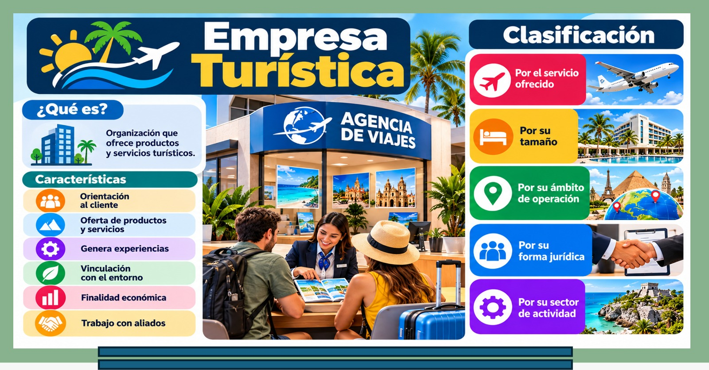

Unidad I · Tema 1.3
Empresa turística
La empresa turística combina recursos humanos, naturales y tecnológicos para generar experiencias. Sus rasgos distintivos de intangibilidad, inseparabilidad, caducidad y dependencia humana exigen una sólida filosofía y objetivos SMART bien definidos.
1.3.1Características de la empresa turística
La empresa turística es una organización que combina recursos humanos, financieros, tecnológicos y naturales para ofrecer servicios y experiencias a los visitantes. Posee características fundamentales que la distinguen de otras industrias:
- Intangibilidad: el servicio no se puede ver, tocar ni probar antes de comprarlo. Esto genera incertidumbre en el cliente. El marketing debe reducir esa incertidumbre mediante fotos, videos de alta calidad, testimonios, garantías y descripciones detalladas.
- Inseparabilidad: la producción y el consumo ocurren simultáneamente. El cliente está físicamente presente mientras se produce el servicio, lo que hace al personal de contacto indispensable; no existe control de calidad previo a la entrega.
- Heterogeneidad: cada experiencia es única. Depende del estado de ánimo del empleado, del clima, de la actitud del cliente y de factores externos. La estandarización de procesos es un reto complejo pero necesario para asegurar un estándar de calidad.
- Caducidad: los servicios turísticos no se pueden almacenar. Una habitación vacía, un asiento de avión vacío o una mesa sin ocupar representan ingresos perdidos irreversiblemente. Esto obliga a aplicar estrategias dinámicas de último minuto y gestión de rendimiento (yield management).
- Estacionalidad: la demanda turística fluctúa drásticamente según las estaciones del año, calendarios escolares y festividades, generando temporadas altas, medias y bajas. El marketing busca suavizar los valles de demanda y capitalizar los picos.
- Dependencia externa: el turismo es altamente vulnerable al clima, la seguridad pública, la política, la economía y las contingencias sanitarias, factores capaces de alterar la demanda de manera imprevista.
- Alta competencia: la competencia es global; un destino compite tanto con su entorno cercano como con cualquier otro lugar del mundo que ofrezca vivencias equivalentes.
- Importancia del factor humano: el personal es el principal activo. La calidez y profesionalismo de un colaborador pueden transformar una experiencia ordinaria en un recuerdo inolvidable, así como una mala atención puede arruinar el mejor producto.
1.3.2Clasificación de las empresas turísticas
Las empresas turísticas se categorizan bajo diversos criterios operativos y estructurales:

La empresa turística es una organización que ofrece productos y servicios turísticos. La infografía la presenta en tres bloques: qué es, cómo se caracteriza y cómo se clasifica.
Por su función:
- Empresas de alojamiento: hoteles, moteles, hostales, casas rurales, campamentos y departamentos turísticos.
- Empresas de restauración: restaurantes, bares, cafeterías y servicios de banquetes/catering.
- Empresas de transporte: aerolíneas, líneas de autobuses, ferrocarriles, cruceros marítimos y arrendadoras de autos.
- Empresas de intermediación: agencias de viajes minoristas, turoperadores mayoristas y plataformas de reserva digital (OTAs).
- Empresas de ocio y entretenimiento: parques temáticos, museos, teatros y centros de turismo de aventura.
- Empresas de servicios complementarios: establecimientos de artesanías, casas de cambio, servicios médicos y empresas de seguros de viaje.
Por su tamaño:
- Microempresas: menos de 10 empleados.
- Pequeñas empresas: de 10 a 49 empleados.
- Medianas empresas: de 50 a 249 empleados.
- Grandes empresas: 250 o más empleados.
Por su ámbito geográfico:
Locales, regionales, nacionales e internacionales.
Por su naturaleza jurídica:
Empresas privadas, empresas públicas, empresas mixtas, cooperativas y asociaciones civiles.
1.3.3Fijación de metas y objetivos
Las metas y los objetivos son la brújula de la organización turística. Sin ellos no existe dirección estratégica ni parámetros claros de evaluación.
Características de los objetivos SMART:
- Específicos (Specific): claros y sin ambigüedades sobre lo que se espera lograr.
- Medibles (Measurable): cuantificables a través de indicadores concretos.
- Alcanzables (Achievable): realistas considerando los recursos y capacidades operativas.
- Relevantes (Relevant): directamente alineados con la misión y visión del negocio.
- Temporales (Time-bound): con un plazo o fecha límite de cumplimiento estipulado.
Tipos de objetivos en la empresa turística:
- De mercado: cuota de mercado, volumen de clientes y penetración en nuevos segmentos.
- De producto: desarrollo de experiencias innovadoras y mejora continua del servicio.
- De precio: posicionamiento tarifario, margen de rentabilidad y competitividad.
- De distribución: diversificación de canales, convenios comerciales y presencia en plataformas digitales.
- De comunicación: notoriedad de marca, reputación online y posicionamiento en buscadores.
- De recursos humanos: programas de capacitación, clima laboral y retención de talento.
- Financieros: incremento en ventas brutas, utilidades netas y retorno de inversión.
- De sostenibilidad: mitigación de huella ecológica y apoyo al desarrollo socioeconómico comunitario.
Ejemplos prácticos de objetivos formulados:
- Aumentar la ocupación hotelera anual del 65% al 75% en los próximos 12 meses.
- Incrementar el consumo promedio por comensal de $800 a $1,000 pesos durante el próximo semestre.
- Lograr que el 40% de las reservas totales ingresen a través del canal directo web en el siguiente año.
- Disminuir la huella de carbono de las excursiones en 15% en un periodo de dos años.
- Capacitar al 100% del personal de primer contacto en hospitalidad y atención al cliente en los próximos 6 meses.
1.3.4Filosofía empresarial: misión, visión y valores
La filosofía empresarial es el conjunto de principios y convicciones que guían las decisiones cotidianas de la organización; representa el alma de la empresa turística y se conforma por tres pilares:
- Misión: responde a ¿para qué existimos, a quién servimos y qué necesidad satisfacemos? Debe ser concisa, inspiradora y auténtica.
- Hotel ecológico: "Ofrecer experiencias de descanso en armonía con la naturaleza, promoviendo el cuidado del entorno y el desarrollo de la comunidad local."
- Agencia de aventura: "Diseñar y operar experiencias seguras y emocionantes que conecten a las personas con la naturaleza y consigo mismas."
- Restaurante turístico: "Servir platillos que celebren la cocina local, con ingredientes frescos y hospitalidad genuina."
- Visión: responde a ¿dónde queremos estar en el futuro? Debe proyectar una aspiración retadora con horizonte temporal definido.
- "Ser el hotel ecológico referente en la región, reconocido por su sostenibilidad y autenticidad."
- "Convertirnos en la agencia de turismo de aventura líder del país con presencia en los principales destinos naturales."
- "Ser el restaurante predilecto por los viajeros que buscan la máxima autenticidad gastronómica en el destino."
- Valores: los principios éticos que rigen la conducta diaria de los equipos: respeto por la naturaleza, hospitalidad genuina, integridad, trabajo en equipo, innovación, responsabilidad social, excelencia y sostenibilidad.